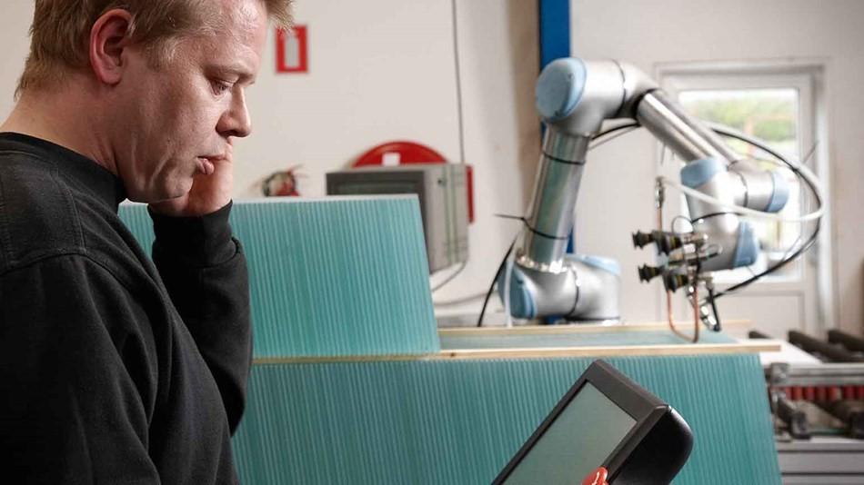

El brazo robótico fácil de programar que ayuda a los empleados
- LA VERSIÓN CORTA
- Gern Glas es uno de los mayores proveedores escandinavos de vidrio y espejos planos para las industrias de mobiliario, cocinas, construcción y solar. Para asegurar su posición como fabricante competitivo, incorporó tecnología robótica en la línea de producción. Como consecuencia, se ha optimizado el proceso de templado de vidrio, que consumía mucha energía, y los empleados ya no tienen que ocuparse de las tareas monótonas.
- EL RETO
- Si los proveedores de otros países pueden hacer algo más barato, existe el riesgo de que los pedidos de grandes cantidades se vayan al extranjero. Esto también es un hecho para el fabricante danés de vidrio y espejos planos Gem Glas. Para utilizar su capacidad al máximo y no perder competitividad, la empresa decidió invertir en tecnología robótica.
“El Universal Robot es un tipo de robot industrial completamente diferente. No necesitamos resguardos de seguridad como con un robot normal. Además, podemos destinarlo fácilmente a diferentes trabajos, sin la necesidad de que un programador se pase tres días codificándolo, más tres mecánicos y una grúa para mover el robot.” GLENN LARSEN director técnico
.
- LA SOLUCIÓN
- El UR5 y el UR10 resultaron formar la combinación robótica ideal para Gern Glas, que también quería sustituir a sus empleados en las tareas monótonas a las que se ven expuestos diariamente.
La tecnología de Universal Robots no solo ofreció una forma mucho más eficaz de cargar piezas de vidrio más pequeñas en la cinta transportadora para el proceso de templado que consume tanta energía, sino que también ayudó a limitar el trabajo unilateral de introducir las piezas en la máquina.
«Ahora, el UR5 coloca piezas de vidrio relativamente pequeñas en la cinta transportadora en una fila adicional junto a las otras piezas. De esta forma, podemos templar mucho más vidrio con el mismo consumo de electricidad. Y el robot es feliz trabajando en tareas monótonas», asegura Glenn Larsen, director técnico de Gern Glas, quien está muy satisfecho con la forma en que el brazo robótico ayuda a aprovechar mejor la capacidad y evitar los problemas de atasco.
Además del UR5 que introduce el vidrio en la cinta transportadora, la línea de proceso cuenta con un UR10 para el arenado y un UR5 adicional para el pegado. En Gern Glas quedaron impresionados sobre todo por la flexibilidad y la facilidad de uso de los robots.